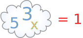
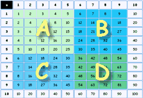

Learn Your Multiplication Tables
The 12 Times Table
| Printable 10 Times Tables: | Printable 12 Times Tables: | |
|
|
Print one and put it on your wall, or paste it in an exercise book.
How to Learn
Your life will be a lot easier when you can simply remember the multiplication tables.
So ... train your memory!
First, use the table above to start putting the answers into your memory.
Then use the Math Trainer - Multiplication to train your memory, it is specially designed to help you memorize the tables.
Use it a few times a day for about 5 minutes each, and you will learn your tables.
Try it now, and then come back and read some more ...
So, the two main ways for you to learn the multiplication table are:
- Reading over the table
- Exercising using the Math Trainer
But here are some "tips" to help you even more:
Tip 1: Order Does Not Matter
|
When we multiply two numbers, it does not matter which is (See Commutative Property.) |
Example: 3×5=15, and 5×3=15
Another Example: 2×9=18, and 9×2=18

In fact half of the table is a mirror image of the other!
So, don't memorize both "3×5" and "5×3", just memorize that "a 3 and a 5 make 15" when multiplied.
This is very important! It nearly cuts the whole job in half.
| In your mind you should think of 3 and 5 "together" making 15. |
||
|
so you should be thinking something like this: |
 | |
Tip 2: Learn the Tables in "Chunks"
It is too hard to put the whole table into your memory at once. So, learn it in "chunks" ...

A Start by learning the 5 times table.
B Then learn up to 9 times 5.
C Is the same as B, except the questions are the other way around. Learn it too.
D Lastly learn the "6×6 to 9×9" chunk
Then bring it all together by practicing the whole "10 Times Table"
And you will know your 10 Times Table!
(We look at the 12x table below)
Some Patterns
There are some patterns which can help you remember:
2× is just doubling the number. The same as adding the number to itself.
2×2=4, 2×3=6, 2×4=8, etc.
So the pattern is 2, 4, 6, 8, 10, 12, 14, 16, 18, 20
(And once you remember those, you also know 3×2, 4×2, 5×2, etc., right?)
5× has a pattern: 5, 10, 15, 20, etc. It ends in either 0 or 5.

9× has a pattern, too: 9, 18, 27, 36, 45, 54, 63, 72, 81, 90
Now, notice how the "ones" place goes down: 9, 8, 7, 6, ...? And at the same time, the "tens" place goes up: 1, 2, 3,...? Well, your hands can help!
Example: to multiply 9 by 8: hold your 8th finger down, and you can count "7" and "2" ... the answer is 72
10× is maybe the easiest of them all ... just put a zero after it.
10×2=20, 10×3=30, 10×4=40, etc.
The Hardest Ones
For me the hardest ones are 6×7=42, 6×8=48 and 7×8=56. I often have to say in my mind:
"six sevens are forty-two", "six eights are forty-eight", "seven eights are fifty-six"
What About the 12 Times Table?
Sounds tough, but once you have mastered the 10× table, it is just a few steps away.
So it just leaves these to remember:
- 3×12=36,
- 4×12=48,
- 6×12=72,
- 7×12=84,
- 8×12=96,
- 9×12=108
And the "Big 3":
- 11×11=121,
- 11×12=132 and
- 12×12=144
Why Learn The Multiplication Table?
While it is generally more important to know why things work, with the tables I recommend pure memory, it makes future math work much easier.
Much like walking, you don't want to think what your feet are doing, you want to enjoy the adventure.
More Help
I also have a longer list of multiplication tips and tricks if you are interested.
You can test yourself using the times tables test.
You can try out Speed Math and Fix The Equation.
Learn Long Multiplication.
And if you are really good, see if you can beat the high scores at Reaction Math.